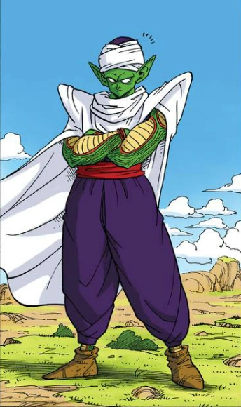

Piccolo Jr. (ピッコロ・ジュニア Pikkoro Junia, lit. "Piccolo Junior"), usually just called Piccolo and also known as Ma Junior (マジュニア Ma Junia), is a Namekian and also the final child and reincarnation of King Piccolo, later becoming the reunification of the Nameless Namekian after fusing with Kami, at which point he was once referred to as Kamiccolo (神コロ様 Kamikoro-sama) by Goku.
According to Grand Elder Guru, Piccolo, along with Kami and King Piccolo, are part of the Dragon Clan, who were the original creators of the Dragon Balls.
A wise and cunning warrior, he was the main antagonist in the final saga of Dragon Ball, the Piccolo Jr. Saga, and was thus a ruthless enemy of Goku.
However, starting with the first saga of Dragon Ball Z, the Raditz Saga, he began to lose all villainous traits, and when he started training Goku's son Gohan during the Vegeta Saga which led to the two developing a strong bond with each other, he became a permanent member of the Dragon Team and eventually one of Earth's greatest heroes.
Throughout the franchise, regardless of Piccolo's allegiance, his general demeanor has always been stern, if not grumpy, with an indifferent attitude towards others.
Piccolo rarely smiles and enjoys solitude. Piccolo is frequently seen meditating in quiet places and drinking thawed ice water in the north area.
However, he shows a noticeable cockiness when fighting.
He can also be very confrontational toward people, showing very direct and honest opinions about a situation or an individual.
Piccolo is known for his very precise and efficient methods in battle and likewise is shown to be very analytical and tactical in battle, able to see through his opponent's skills and weaknesses to devise effective strategies for victory.
In the Baby Saga, Baby openly acknowledged Piccolo as one of the most brilliant fighters in the galaxy.
Originally, Piccolo inherited his father's desire for world domination and destroying Goku.
He was determined to prove his superiority and possessed many of the villainous properties of his father, such as a violent and destructive nature and a total disregard for anything besides victory.
This was shown during his battle with Goku in the 23rd World Martial Arts Tournament, where he shows almost no mercy for his opponent, breaking all of Goku's limbs while laughing sadistically, believing it was necessary after what Goku had done to his father.
Despite all this, Piccolo was not without a measure of restraint and honor, as he for no reason saved a mother and daughter from debris during a storm.
He also let Krillin walk away after submitting in the tournament.
Piccolo has also shown traits of pragmatism, teaming up with his archrival Goku and later the rest of the Z Fighters when the threat of the Saiyans proves to be too much for him alone, citing the aliens' defeat as a shared goal.
According to Goku, his overall evil nature became more of a stubborn and angry attitude than flat-out villainous.
After his battle against Goku, Piccolo gradually began to develop for the better as the evil nature only dwelled through his desire to destroy Goku inherited from his father.
Later, when he and Goku team up to battle Raditz, Piccolo began to show more respect during the battle, even commemorating Goku on his noble sacrifice despite still considering him an enemy and, during the battle against Nappa, praised the other Z Fighters' bravery and tactics.
While training Goku's young son, Gohan, while originally only for to prepare for the coming Saiyans, Piccolo's heart and motives quickly begin to change as the boy takes his time to talk with Piccolo and have normal discussions that do not result in a violent outbreak, this stemming from Gohan agreeing on Goku's views of Piccolo now being more grumpy than truly evil.
During the time he was training Gohan, both Mr. Popo and Kami noted the change in Piccolo's personality with Mr. Popo noting he was no longer the Demon King of old referencing his loss of Demon Clan status and Kami himself surmised that he had the same premonition of death that Kami himself had and that Piccolo wanted to leave behind some kind of legacy even if it was in the son of his sworn enemy.
Around the start of Gohan's training Piccolo told Gohan that if he feels resentment towards him, then he should curse his own fate like Piccolo did, indicating Kami was right about Piccolo's motivation.
During the battle with Nappa, Piccolo goes as far as to sacrifice his life to save Gohan, stating how his friendship and love had changed him forever.
Piccolo has stated that Gohan was the first person to see him not as a monster and was proud to call him his friend.
From then on, Piccolo became very protective of Gohan, proud in his growth as a man and seeing Gohan almost like a little brother, to which Gohan himself came to care for Piccolo as a dear uncle.
This also truly cemented his change from evil to good and a true friend and team-mate for the Z Fighters.
He also came to view Goku in a similar light as a dear friend and ally as after being teleported from the self-destructing Planet Namek and learning of Goku's intentions, Piccolo noted he would have preferred to fight alongside the noble warrior to the end, showing his respect for the Earth's savior.